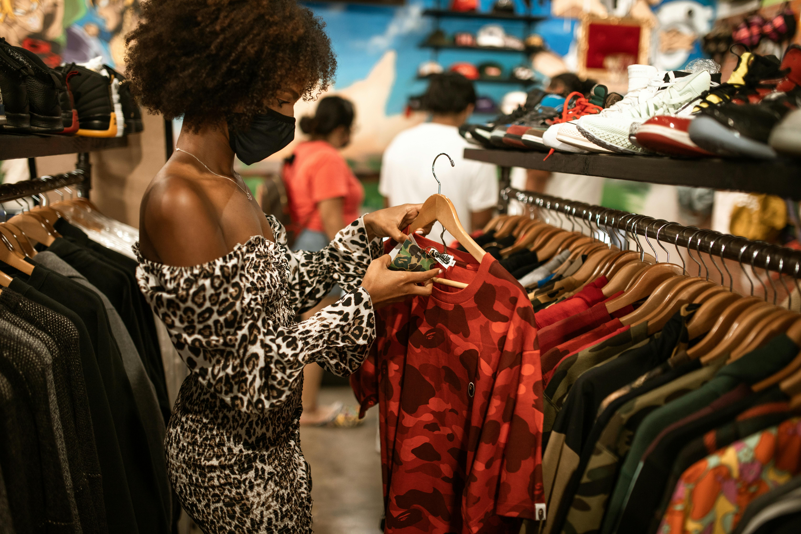

I am from Italy, a country famous for creativity and style. I appreciate beauty, quality, craftsmanship and I am committed to empowering women.
I am from Italy, a country famous for creativity and style. I appreciate beauty, quality, craftsmanship and I am committed to empowering women.
"I am very proud of the work I do today, using my style vision to empower women to present their best version to the world and to achieve their ambitions in life, whatever they may be."
My mother is a highly skilled tailor from the famous sartorial Neapolitan school. I grew up among patterns, fabrics and appreciating quality over quantity. I studied art and design at high school, which refined my aesthetic sense. I also developed a passion for journalism and politics, and the role of women in modern society.
From Bologna to the UK
I graduated from University of Bologna with a degree in Political Science. I quickly realised from a young age that what I wore could give me credibility and confidence in a highly competitive world. Others noticed this too, and soon friends and colleagues started approaching me for advice. I loved being able to help them! In 2004 I moved to the UK to work in fashion, always with the ambition to continue to help women with their personal and professional style.
Hear from the amazing women we’ve helped transform their style.
“Thanks to TonePersonalStyling, I finally feel confident in my wardrobe. Their personalized advice helped me find my unique style!”
Jessica Parker
Entrepreneur
“I love how they understand my taste and guide me to make bold, yet elegant choices. A game changer for my style!”
Emily Johnson
Fashion Blogger
“Their expert advice made shopping effortless and enjoyable. I've never felt better about my look!”
Sophia Lee
Marketing Specialist